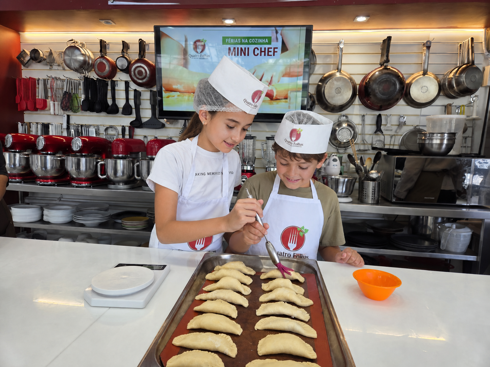
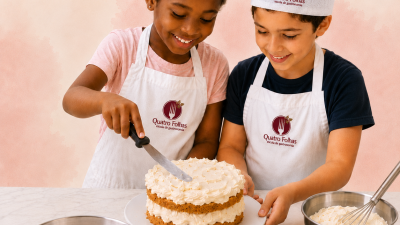
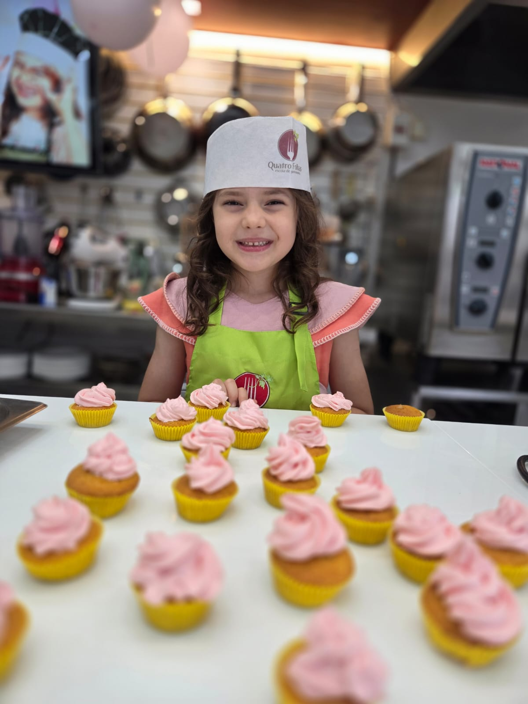

A criança aprende fazendo, com receitas possíveis, cor, textura e descoberta.
Mini Chef
Pequenos chefs, grandes descobertas.
Uma experiência divertida para colocar a mão na massa, provar ingredientes, criar receitas e descobrir a cozinha com segurança.


mão na massa
Atividades acompanhadas em cozinha escola, com orientação e cuidado.
Grupos pensados para respeitar ritmo, autonomia e linguagem da criança.
Preparo, organização, convivência, degustação e orgulho do resultado.
Aprendizado
Cozinhar também é desenvolver autonomia.
O Mini Chef transforma a cozinha em uma experiência ativa: a criança participa, prova, cria, organiza e descobre que aprender pode ter aroma, cor e sabor.
Eu consigo fazer
Entende etapas, mede, monta, organiza e ganha confiança na bancada.
Receitas com imaginação
Cores, texturas e apresentações deixam a aula mais divertida e memorável.
Aprender junto
Espera, colaboração, escuta e cuidado com o espaço compartilhado.
Novos ingredientes
Aproxima a criança dos alimentos de um jeito leve, positivo e prático.
Para os pais
Não é só uma aula fofa. É uma experiência com estrutura.
O responsável entende rápido o que importa: a criança se diverte, mas a condução é feita com organização, cuidado e proposta pedagógica prática.
Como é a turma
Uma jornada simples, prática e cheia de descobertas.
A programação acompanha períodos, férias e calendário da escola, mantendo uma jornada clara para o responsável acompanhar.
Boas-vindas na bancada
Organização, higiene, combinados e primeiro contato com os ingredientes.
Mão na massa
Receitas guiadas, preparo, montagem e acompanhamento próximo.
Criar e finalizar
Cores, textura, apresentação e pequenos detalhes do resultado.
Degustar e celebrar
Convivência, orgulho do preparo e fechamento da experiência.
Fotos e estrutura
Uma experiência infantil dentro de uma cozinha de verdade.
Estrutura real, ambiente cuidado e visual de escola de gastronomia para transmitir confiança ao responsável.
